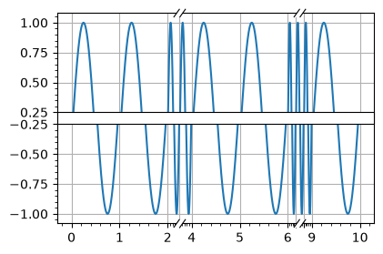

Utilities#
The library contains several matplotlib utilities which can be generally useful. Most of them are registered when importing xplt.
import matplotlib.pyplot as plt
import xplt
# xplt.apply_style()
Discontinuous axes#
fig, ax = plt.subplots(figsize=(4.5, 3))
x = np.linspace(0, 10, 10000)
ax.plot(x, np.sin(2 * np.pi * x))
ax.minorticks_on()
ax.grid()
ax.set_xscale("discontinuous_linear", breaks=[(2, 4), (6, 9)], space=0.5)
ax.set_yscale(
"discontinuous_linear",
breaks=[
(-0.25, 0.25),
],
space=0.1,
hide=True,
)
